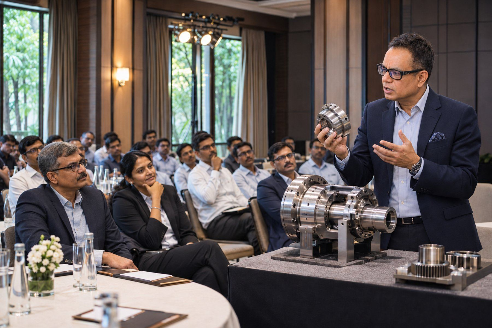

Beyond advice. Accountable for outcomes.
Business growth, sales effectiveness and people strategy for industrial B2B organisations.
Interventions built around your business priorities
Discover interventionsBusiness Strategy & Go-to-Market
Clarify where to compete, which customers to prioritise, how to differentiate and how to take your offer to market.SalesSales Effectiveness & Growth Acceleration
Strengthen the sales process, pipeline discipline, opportunity conversion, forecasting, key account management and sales leadership.ChannelsChannel & Distributor Effectiveness
Improve channel design, distributor selection, onboarding, joint business planning and channel-sales capability.MarketingMarketing & Market Development
Align positioning, customer engagement and marketing priorities with the markets and growth opportunities that matter.LeadershipLeadership Coaching & Development
Help leaders build commercial judgement, ownership, adaptability and the ability to develop others—through coaching integrated with real business priorities.People & HRHR Strategy & Organisational Effectiveness
Align roles, performance management, rewards, engagement, talent development and succession with business goals.TransformationOrganisation Transformation & Change
Support leaders in clarifying structures, responsibilities, ways of working and the changes needed for the next stage of growth.Built around your priorities
Head & Tail Asia works with business owners, CEOs and business leaders to address the challenges that hold growth back—from go-to-market choices and sales execution to leadership capability, organisation effectiveness and people practices. We combine commercial understanding with hands-on implementation support, helping your strategy translate into action and measurable progress.
ExploreInterventions for industrial B2B





“Ajit brings first-hand sales experience and deep people expertise to the challenge of building high-performing sales teams.”
“Ajit’s coaching stands out because it is rooted in real leadership experience and focused on the challenges leaders face every day.”
“Ajit combines business leadership, frontline sales experience, people strategy and executive coaching to help organisations translate strategy into stronger people and better performance.”
“Ajit’s creativity and passion for doing things differently set him apart, making him a distinctive force in today’s competitive world.”
Good strategies need strong execution—and the right people systems.
Industrial businesses rarely have just one isolated problem. Growth may be constrained by an unclear market focus, inconsistent sales processes, underperforming channels, gaps in leadership capability or HR practices that are disconnected from commercial priorities. These issues often reinforce one another.
Head & Tail Asia looks across the business, sales and people dimensions to identify what is getting in the way, agree the priorities and work alongside your team to put practical improvements into action.
Meet Ajit JainExperience across:
- Sales
- Marketing
- P&L
- Senior HR
Business-led. People-aware. Focused on implementation.
- A commercial perspective shaped by experience in Sales, Marketing and P&L leadership, alongside senior HR leadership.
- An integrated view of business performance: market choices, sales execution, leadership and people systems.
- Practical interventions designed around the organisation's actual context—not off-the-shelf answers.
- Close partnership with leaders and teams through diagnosis, co-design, implementation and review.
- A boutique approach that stays close to the problem and the people responsible for solving it.
We do not believe advice alone creates change. Progress comes from making the right choices, translating them into action and building the ownership to sustain them.
“I had the opportunity to interact with Ajit on various aspects of leadership and HR, including some informal and insightful conversations. Given his…”
“Having interacted with Ajit extensively across professional forums, leadership panels and business discussions, I have always found him to be a…”
“Ajit brings first-hand sales experience and deep people expertise to the challenge of building high-performing sales”
“Ajit’s coaching stands out because it is rooted in real leadership experience and focused on the challenges leaders face every”
“Ajit combines business leadership, frontline sales experience, people strategy and executive coaching to help organisations translate strategy into…”
“Ajit’s creativity and passion for doing things differently set him apart, making him a distinctive force in today’s competitive”
From diagnosis to sustained action
- Step 1Diagnose
Understand the business context, current performance, data and perspectives of key stakeholders.
- Step 2Co-design
Agree the problem to solve, define success and develop a practical intervention with your team.
- Step 3Implement
Work alongside leaders and teams through working sessions, coaching, tools, reviews and on-the-job support.
- Step 4Sustain
Establish simple measures, review rhythms and ownership so progress continues beyond the intervention.
How we work
Explore the method
In-person · On the shop floor
A practical intervention—not a report that sits on a shelf
Every engagement starts with your context and the issue you need to solve.
CO-DESIGN
IMPLEMENT
SUSTAIN
Coaching built into the work
Coaching integrated with real business priorities—helping leaders turn insight into action and build ownership.
Leadership coachingSales leadershipFounder snapshot
Experience across the business and people agenda
Head & Tail Asia is led by Ajit Jain, whose 30+ years of industry leadership span Sales, Marketing, business and P&L leadership, and senior HR responsibilities. This combination brings a practical understanding of the connection between commercial ambition, organisational capability and people performance.
Meet the FounderInsights
Explore field insights
Fifty short, practical answers to the situations industrial sales leaders face every week.
 When Your Salesperson Has a Better Relationship With the Customer Than the Company DoesManaging Sales Teams · 2 min readHow to Handle a Salesperson Who Is More Interested in Incentives Than CustomersManaging Sales Teams · 2 min read
When Your Salesperson Has a Better Relationship With the Customer Than the Company DoesManaging Sales Teams · 2 min readHow to Handle a Salesperson Who Is More Interested in Incentives Than CustomersManaging Sales Teams · 2 min read When Your Best Salesperson Threatens to Leave: Should You Retain Them at Any Cost?Managing Sales Teams · 2 min read
When Your Best Salesperson Threatens to Leave: Should You Retain Them at Any Cost?Managing Sales Teams · 2 min read Why Sales Teams Often Resist Sharing Customer InformationManaging Sales Teams · 2 min read
Why Sales Teams Often Resist Sharing Customer InformationManaging Sales Teams · 2 min read The Customer Likes You, But Doesn't Give You the Order. What Are You Missing?Winning Customers · 2 min read
The Customer Likes You, But Doesn't Give You the Order. What Are You Missing?Winning Customers · 2 min read How to Sell When Your Competitor Is 15% CheaperWinning Customers · 2 min read
How to Sell When Your Competitor Is 15% CheaperWinning Customers · 2 min read When a Customer Keeps Asking for Quotations but Never Places an OrderWinning Customers · 2 min read
When a Customer Keeps Asking for Quotations but Never Places an OrderWinning Customers · 2 min readFeatured insight
Explore insightsWinning Customers2 min readHow to Sell When Your Competitor Is 15% Cheaper
Read the insight Managing Sales Teams2 min readHow to Manage People Who Are Older and More Experienced Than You Read
Managing Sales Teams2 min readHow to Manage People Who Are Older and More Experienced Than You Read Managing Sales Teams2 min readWhen Your Best Salesperson Becomes Your Biggest Management Problem Read
Managing Sales Teams2 min readWhen Your Best Salesperson Becomes Your Biggest Management Problem Read Managing Sales Teams2 min readHow to Manage a Salesperson Who Knows the Customer Better Than You Do Read
Managing Sales Teams2 min readHow to Manage a Salesperson Who Knows the Customer Better Than You Do Read Managing Sales Teams2 min readWhen Two Senior Salespeople Are Fighting Over the Same Customer Read
Managing Sales Teams2 min readWhen Two Senior Salespeople Are Fighting Over the Same Customer Read Managing Sales Teams2 min readHow to Deal With a Salesperson Who Always Has an Excuse for Missing Targets Read
Managing Sales Teams2 min readHow to Deal With a Salesperson Who Always Has an Excuse for Missing Targets ReadHave a business challenge that needs more than a recommendation?
Let's understand what is holding performance back and identify the intervention that can move it forward.
Contact: ajit.jain.gsti@gmail.com
Start a Conversation